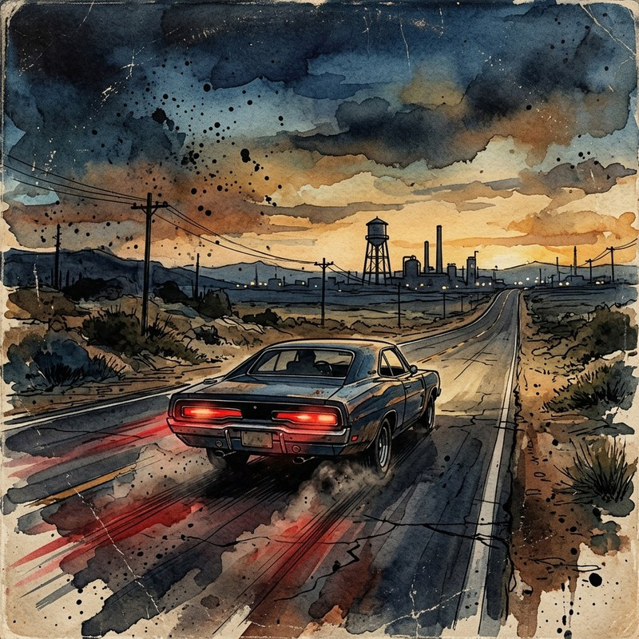
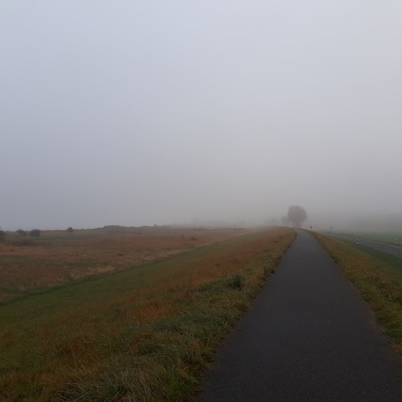
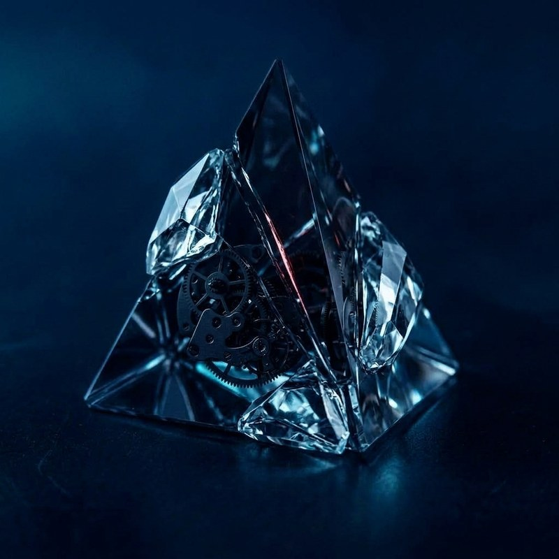
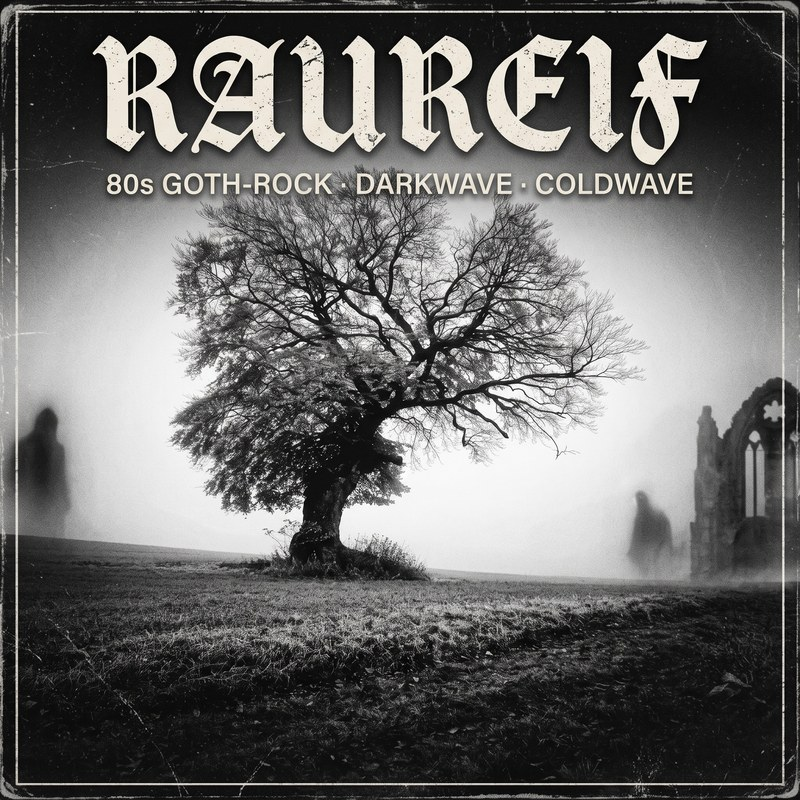

Piston Drive
„Two Towns Behind“
Erdiger Southern- & Boogie-Rock aus der Werkstatt. Röhrenamp-Wärme, staubige Highways und 100% Live-Room-Energie.
Vom Kassetten-Riff zur virtuellen Band: Alte Songideen aus dem Homestudio treffen auf zeitlose Musikstile – von 70s Boogie Rock über eisigen Darkwave bis zur nordischen Seemanns-Moritat.
Klick auf Play für den 10-Sekunden Hook-Teaser oder tauche direkt in das jeweilige Band-Universum ein:

„Two Towns Behind“
Erdiger Southern- & Boogie-Rock aus der Werkstatt. Röhrenamp-Wärme, staubige Highways und 100% Live-Room-Energie.

„Mecklenburg“ / „Joguleit“
Karge Weite, DADGAD-Akustik-Drone, pumpendes Harmonium und der tiefe Bariton von Sänger Ox. Einfach und ehrlich.

„Schön und Schrecklich“
Crystalline Noir: Analoge Synthesizer, treibender Arpeggiator-Bass und unterkühlte deutsche Poesie. Eis im Blick.

„Vollkommen und leer“
Sisters-of-Mercy-Drive: Gnadenloser Drum-Machine-Beat, Flanger-Bass, schneidende Chorus-Gitarren und Schattenspiel in der kalten Gasse.
„Saufen muss ich noch selber“
Die KI mäht den Rasen und schreibt den Text – aber der Kater bleibt echte Handarbeit. Der ultimative Party-Abriss mit Augenzwinkern.
Was passiert, wenn man alte Melodien und Riffs aus zwanzig Jahren Homerecording (Cakewalk-Demos von 2001 bis 2020) nimmt und ihnen heute die Band zur Seite stellt, die man damals nie hatte?
Jedes Projekt hat seine eigene unerschütterliche Klang-DNA: Echte Gitarren-Ideen, durchdachte deutsche und englische Lyrik und virtuelle Frontmänner mit Charakter – von Ox bis Clutch. Keine seelenlose Fließbandware, sondern kuratierte Musik mit Seele und Kante.